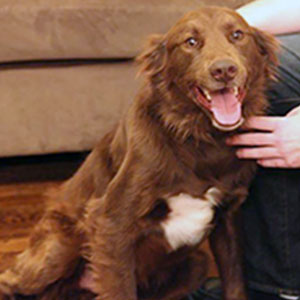
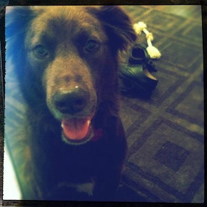
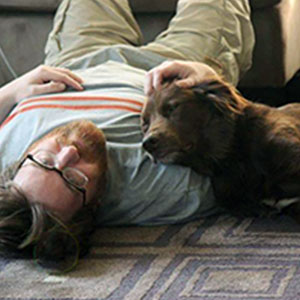
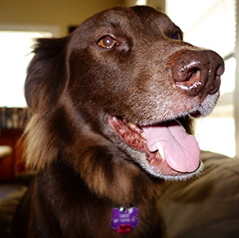

20 years in code
a relationship rendered in html, css, javascript and svg
A Relationship Rendered in Code? who does that?
Well, I do. I am Brian Rountree and for the past 20 years I have shared my life, my love, my fear, my hope and my dreams with Hugh Donagher; the best thing that ever has or will happen to me. But I am not very good with the emotional sides of the relationship equation. I never have been. In the first 10 years of our marriage, I forgot 25% of Hugh's birthdays and around 20% of our anniversaries.
It is not that I don't love Hugh, I do, very much so. But I am simply not wired in a way that can frame, think about, and express all of the soft and fuzzy parts of the human condition. My general lack of talent with the emotive aspects of life used to bother me a great deal. I married the man of my dreams, a man I will gladly, happily spend the rest of my life with, why couldn't I remember his birthday? Why did I never think of buying flowers for no reason whatsoever? This used to weigh heavily on me.
But something happened along the way.
We kept going.
Year after year. Decade after decade at this point! Our relationship survives because we choose for it to survive. We work, together, to face whatever this crazy world throws at us. And somewhere along the way, Hugh and I figured a few things out. You are what you are. It is that simple, yet so few people in the world truly understand what that means.
I will never be the man that remembers important dates, surprises Hugh with flowers, or notices the subtle hints about what Hugh may want for Christmas; but Hugh still loves me. I am, as we enter our third decade together, at peace with who I am and confident in my relationship. I don't have to be perfect, I just have to be Brian.
For this, I owe Hugh a lifetime of thanks.
So What are You Good At?
Well, I am not bad code.
So I figure, a genuine effort to show Hugh how much I care for him, expressed through something I am good at, is far more likely to convey my feelings than struggling to come up with a grand romantic gesture. So I busted out my development environment, polished up my illustrator skills and started parsing data. This site is built using HTML5, javascript, SVG. The graphs and visualizations are created with D3.
I have made no effort whatsoever to make this site cross browser, as Hugh only uses two browsers on his mac that I am aware of. If you are viewing this site using a less capable browser, your experience may be less than ideal. I am fine with that, as this site, ultimately is for the two of us.
Places We Have Lived over 20 years
A Timeline of Events the history of Hugh and Brian
Chico Joins the Family best.dog.ever

- 

- 
- 


- 
The Ties that Bind. Hugh's ability to make connections
All the Data! important and informative stats.
(some of which may be fudged a bit, but we won't tell...)
The Donagher 2v.3 now running the enhanced software.
The Infographic so "on trend" it hurts.
I humbly submit a 10 reasons
why Hugh is the love of my life infographic